NICORA · 13 октября 2026Отчёты о разработке
Тестовый стенд RABAEV/orcl. Работа по спринтам продолжается.
Функциональный блок реализован01 · Перенос СТ и ожидание товара
Задание №1080 выполнено. Сохранены запас 3 EA, резерв 3 EA, 3 физические маркированные единицы и 6 кодов.
Подробный отчёт · Данные отчёта JSON
До обновления
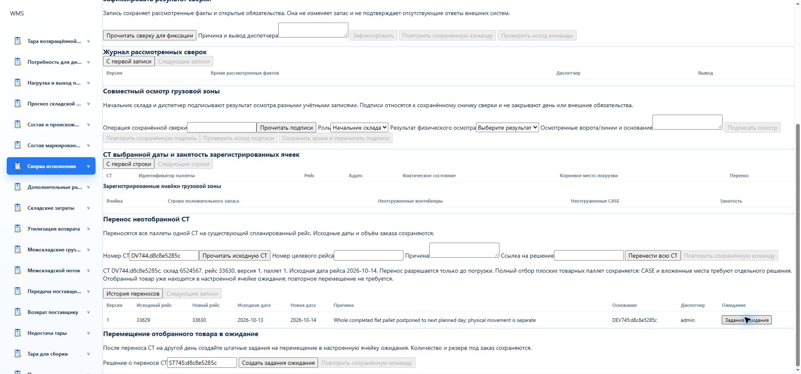
Обновлённый интерфейс
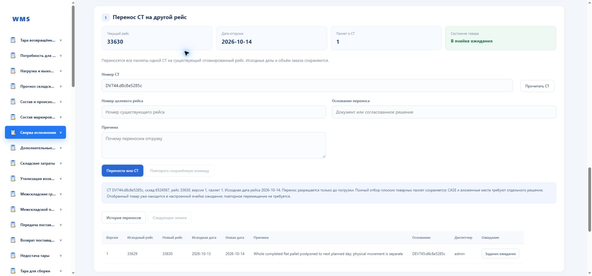
Выполненное задание
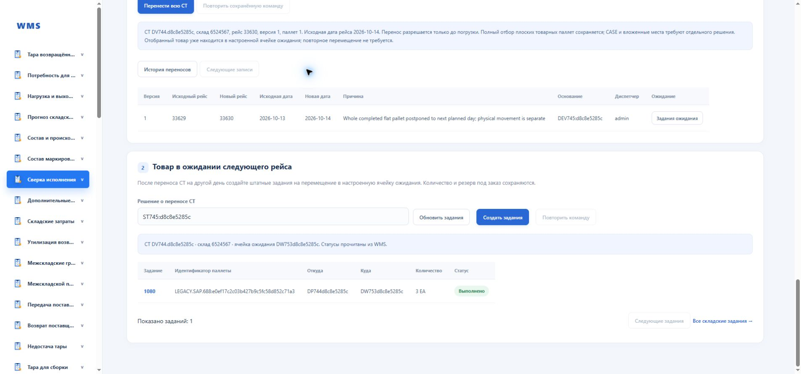
Скриншоты показывают реальные данные локального интерфейса. Это не подтверждение завершения всех спринтов, реальных государственных интеграций или испытаний оборудования.
02 · Выбор рейса
Период дат, район и код магазина. Выбор использует существующие рейсы ТМС.
Отчёт
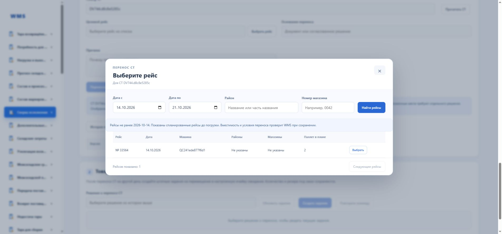
03 · Складские задания
Карточка ожидания1080: DONE, план/факт3 EA, повторное выполнение отключено. Проверка preset в браузере открыта.
Подробный отчёт
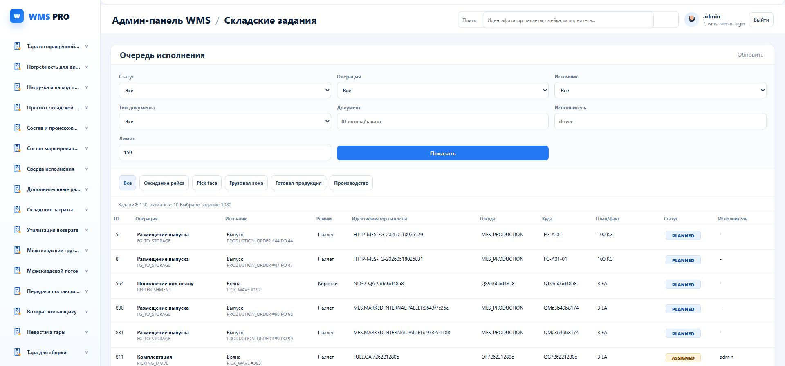
04 · Функциональные доработки заданий
Грузовая выборка, точное количество Oracle, восстановление черновика и карточка задания.
Отчёт №4
Новые движения и запас этим блоком не создавались.
05 · Актуальная карточка и очередь ожидания
Серверный статус, защита прогресса и постоянная ссылка на очередь.
Отчёт №5
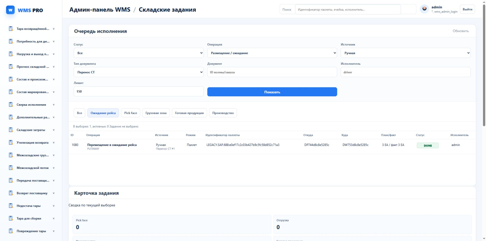
06 · Последовательное пополнение
Частичная замена двух источников и продолжение прежнего задания, чужой резерв сохранён.
Отчёт №6 · Факты JSON07 · Общая паллета и две подачи
Задания1086/1087 DONE20/8EA, сохранены три владельца резерва. Лишняя физическая выдача устранена.
Отчёт №7 · Факты JSON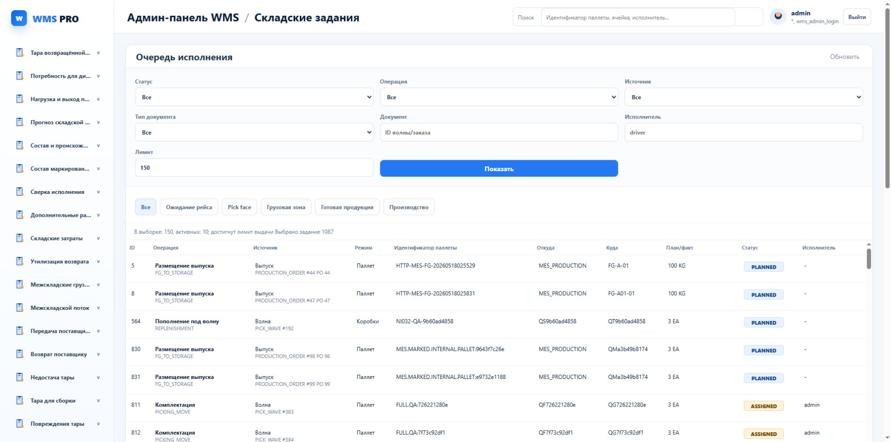
08 · Частичный заказ общей паллеты
Две подачи20+12 EA; резервы12,8,14 сохранены.
Отчёт №8 · Факты JSON09 · Исполнение волны
Фактические задания, причины, потребность и восстановление сохранённого решения.
Отчёт №9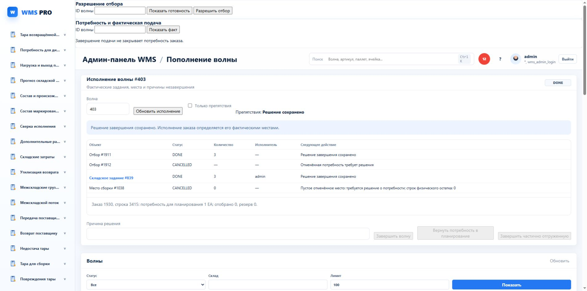
10 · Несколько резервов одной паллеты
Task1099 DONE20, два исходных резерва сохранены; лишнего продолжения нет.
Отчёт №10 · Факты JSON11 · Допуск отбора
Текущий склад и сохранённый запрос; три связанные панели волны.
Отчёт №11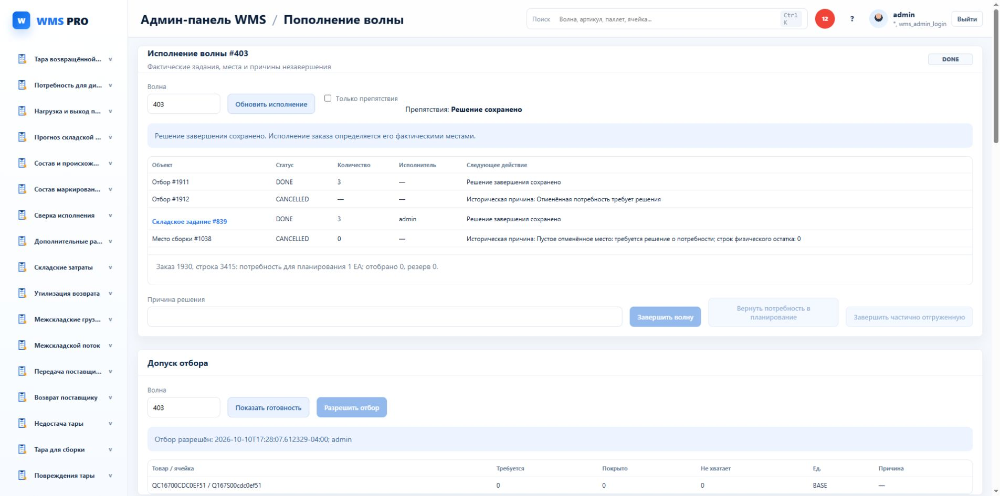
12 · Выбранная волна и её очередь
Ссылка вне первых100 строк и защита текущего склада.
Отчёт №1213 · Приёмка и позиции SAP
Отчёт №13Приёмка · Две позиции
14 · Фактическое исполнение заказа
Отчёт №14Один снимок Oracle, текущие права и защита поздних ответов.
15 · История приёмки
Отчёт №15Исходная приёмка и текущий остаток, восстановление команды.
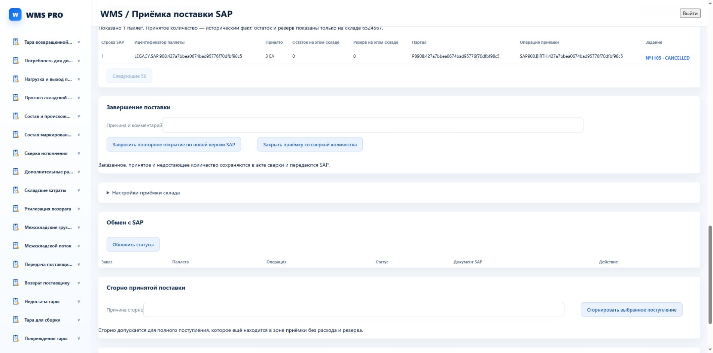
16 · CASE в ожидание рейса
Отчёт №16Одна команда ядра: партии, резерв, место и завершение задания.
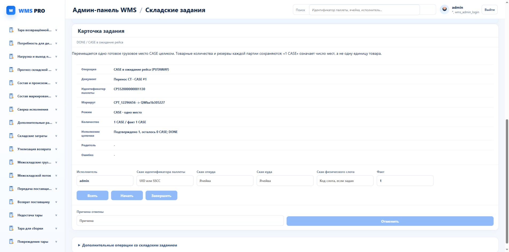
17 · CASE: контроль и повторное ожидание
Отчёт №17Актуальная версия заказа и повторные перемещения одного места.
18 · Несколько CASE одной СТ
Отчёт №18Два отдельных задания, одна СТ, партии и резерв сохранены.
19 · HU, CASE и исполнение заказа
Отчёт №19Целое HU:20EA; после распаковки8+12, резерв сохранён.
Задание1138 · Новый экран HU20 · CASE между слотами
Отчёт №20CASE/исполнение версия10; физический слот, замер, надёжный повтор.
Скриншот слота21 · Исполнение заказа и текущий CASE
Отчёт №21Резерв, точные единицы, недостача, текущая версия CASE и история отгрузки.
Исполнение · Текущий CASE22 · Позиция приёмки и закрытое основание
Отчёт №22Строка2, правила маркировки, просмотр истории; новые операции закрыты.
Скриншот формы23 · Заказы по текущему складу
Список и карточка проверяют RUSERS/право/WARE в одном snapshot; точные количества и единицы сохраняются.
Отчёт · Данные
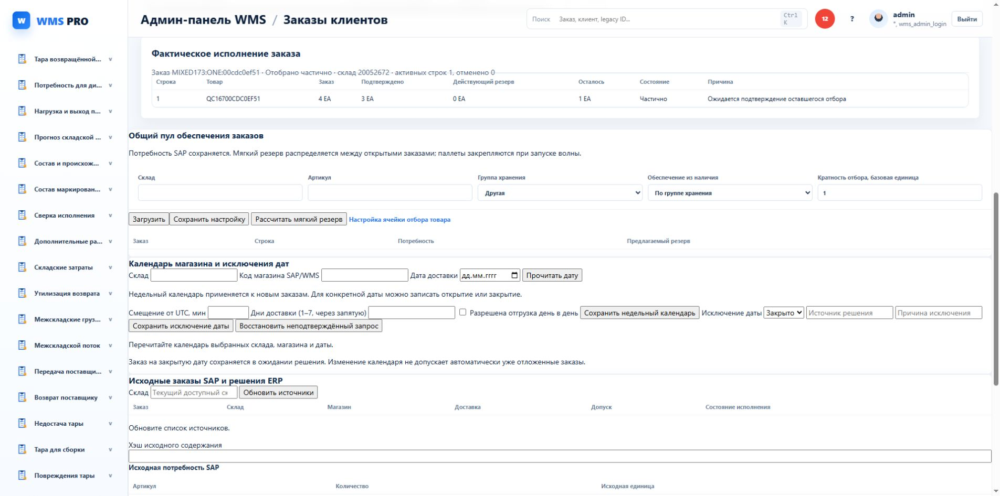
24 · Старые заказы и ограниченная выборка
Переход между страницами, фильтры, старые внутренние ID; ограничение документов до расчёта итогов.
Отчёт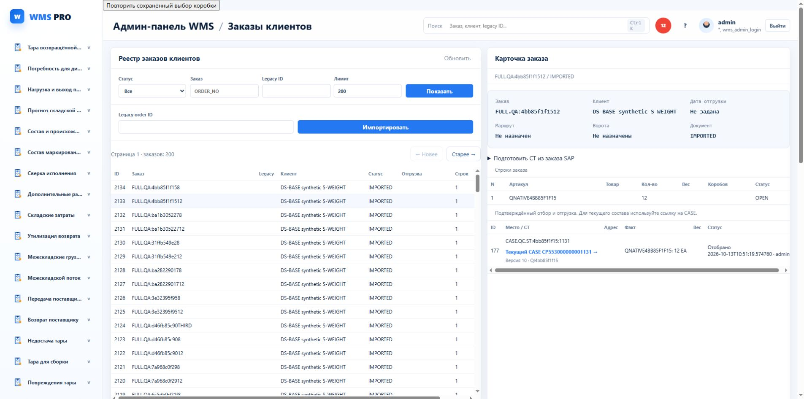
25 · Целое HU в ожидание рейса
Задание1149:1HU/дваCASE/20EA, P20/H20, текущиеверсии и штатныеRoot/SYNC/outbox.
Отчёт · Фактические данные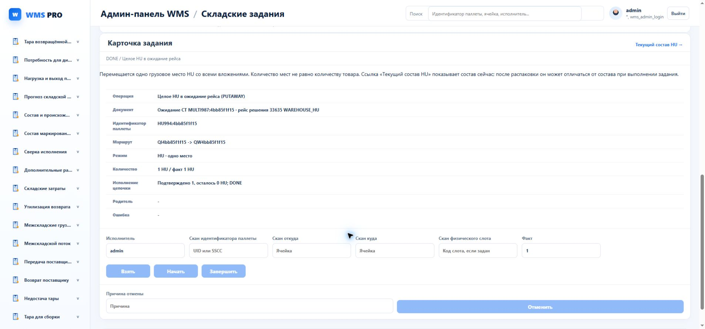
26 · Матрёшка и уже в ожидании
Два контейнера/дваCASE/20EA/одноTOP; занятый рейс не приводит к зависанию и частичному плану.
Отчёт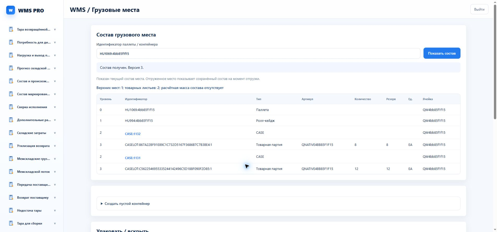
27 · Несколько мест одной СТ
HU + CASE и два самостоятельных TOP: отдельные штатные задания, общий P20/H20 и выбор места в интерфейсе.
Отчёт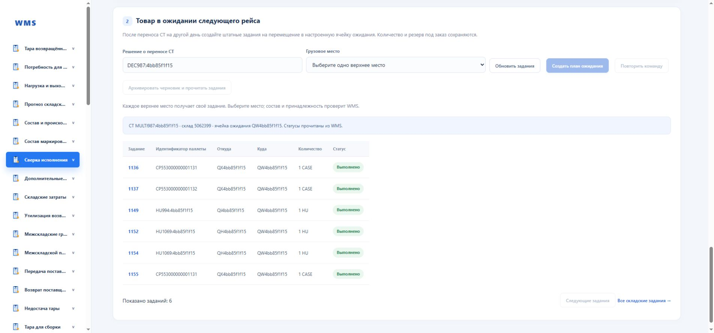
28 · Волна → место → контроль
Актуальная версия и ячейка CASE, действия по составу и отдельный рабочий экран контроля.
Отчёт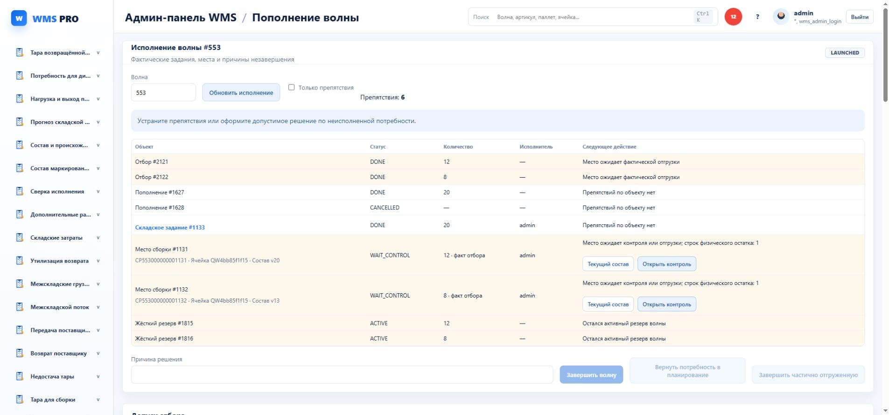
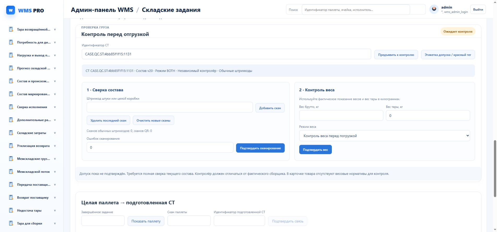
29 · Команды и сканы контроля
Отдельное чтение, архивирование повреждённого исходника, свежий status после повтора и исправление отдельных сканов.
Отчёт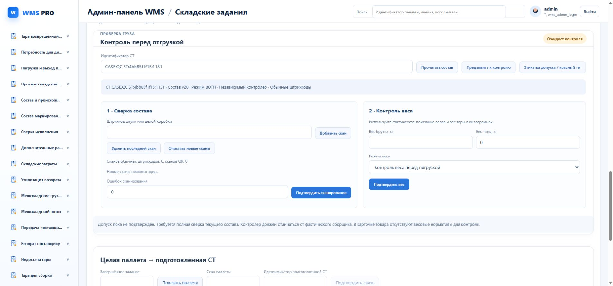
30 · Автоматическая подготовка СТ
Целые коробки, смешанные хвосты одной группы, точные ограничения и прежний Oracle writer.
Отчёт · Данные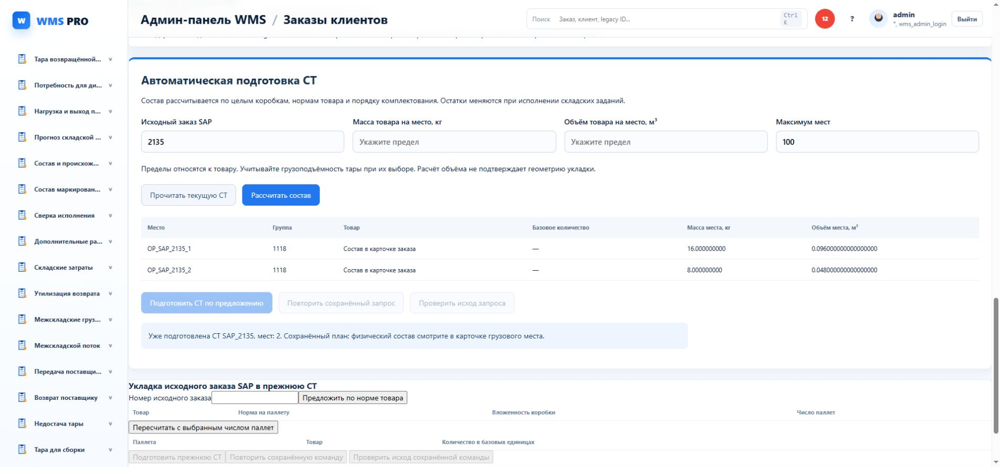
31 · Контроль по этикетке CASE
Физический штрихкод открывает существующий QC; команды сохраняют постоянный источник.
Отчёт
32 · Автоподготовка → прежний рейс
Карточка сохранённой СТ и текущие ограничения существующего назначения.
ОтчётПромежуточный экран4333 · Температурные требования рейса
Текущие настройки SKU, пересечение диапазонов и видимая неопределённость режима машины.
Отчёт34 · Температурная совместимость и профиль машины
Автоукладка V2 и числовые возможности автомобиля через существующий версионный профиль.
Отчёт · Данные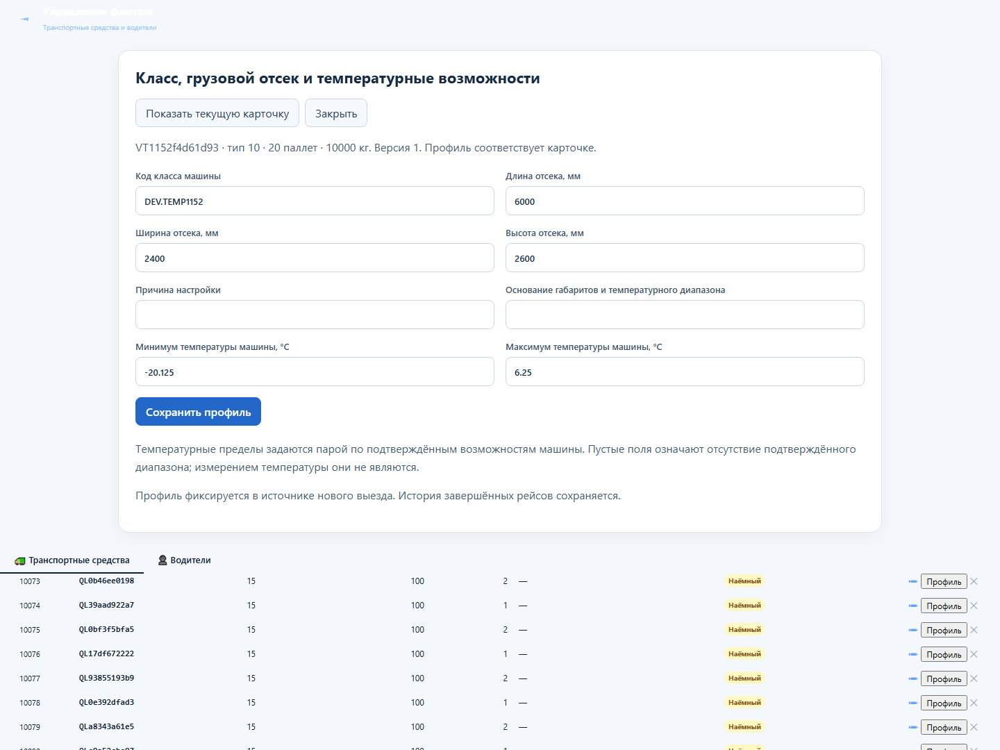
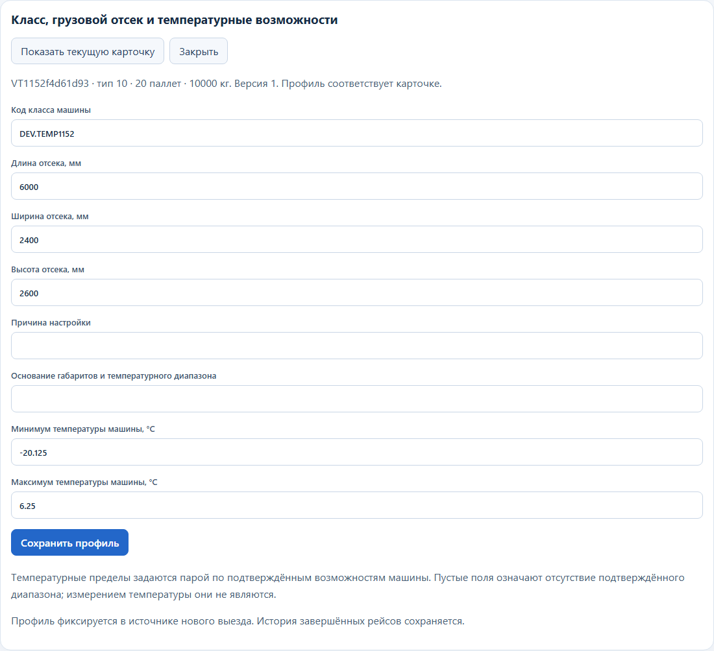